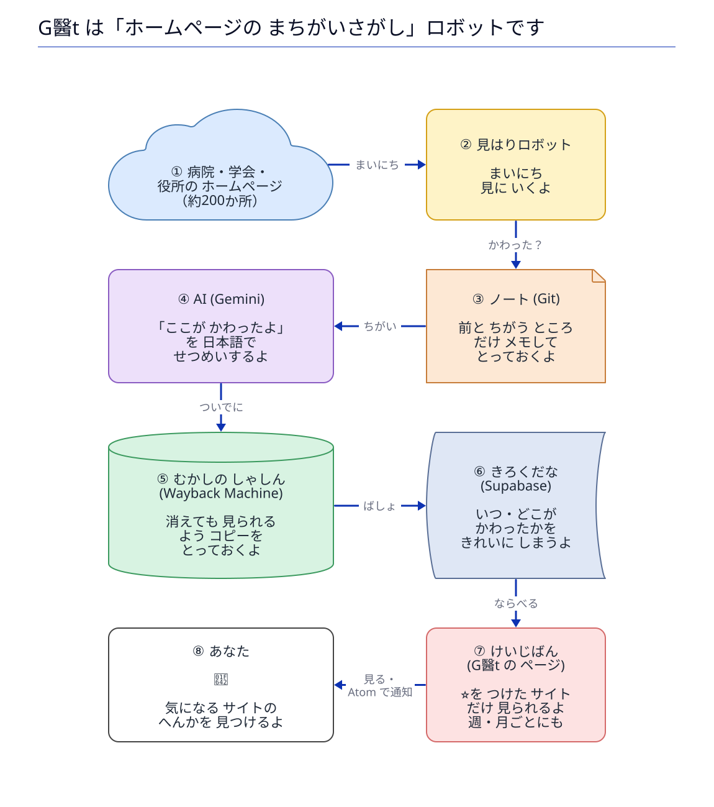

G医tについて
生成: 2026-10-06 12:34 JST ・ 監視サイト一覧（179） ・ アーカイブ ・ 📡 Atom ・ G医tについて
どんなプロジェクトか
G医t（G-I-T）は、医師であるMatanuki氏が、医療・薬事・学会関連サイトの「本当に必要な更新」を正確に捉えるために設計・運用している個人プロジェクトです。
約179のサイトを毎時間見に行き、装飾や動的な部分を取り除いて「意味のあるコンテンツの変化」だけを Git に記録し、日本語で解説します。更新を検知したページは Wayback Machine にも保存します。営利を目的とせず、オープンに公開しています。
設計の考え方は Wiki の「設計思想」に書いています。
1枚でわかる G医t

画面の見かた
- 追加 / 変更 / 削除
- AI要約の各行の頭に付く印です。ページの内容が増えた・書き換わった・なくなった、を表します。
- ☆（星）
- 気になるサイトをフォローします。「フォロー中のみ」に切り替えると、そのサイトの更新だけが並びます。選択はお使いのブラウザの中にだけ保存され、サーバーには送られません。
- 🔍 差分
- 変更前と変更後を並べて見られます。AI要約を確かめたいときに使います。
- 📦 Wayback Machine
- Internet Archive に保存された、監視対象ページのコピーです。保存には時間がかかることがあり、その間は「保存待ち」と表示されます。
- 📡 Atom
- フィードリーダーで購読できます（すべて／サイトごと／分類ごと）。
時刻はすべて日本時間（JST）です。
アプリとして使う
G医t は、スマートフォンやパソコンにアプリとしてインストールできます。ホーム画面やスタートメニューから、ブラウザの枠なしで開けます。
iPhone / iPad では、Safari の共有ボタン（□に↑）から「ホーム画面に追加」を選んでください。
いま、アプリとして開いています。
- Android / Windows / Mac（Chrome・Edge）: アドレスバーのインストールのボタン、または上のボタンから。
- つながっているときは、いつも最新のページを表示します。接続できないときだけ、最近開いたページの保存済みの控えを表示します（最新ではない場合があります）。
ご利用にあたって
- AI要約は誤りや抜けを含むことがあります。重要な情報は、必ず「差分」または公式サイトの原文でご確認ください。
- このサイトは公開されている情報の変化を記録するものです。診療・調剤・請求・法的な判断の根拠として、この内容だけに頼らないでください。
- 監視はおおむね1時間ごとです。更新の検知は、公式サイトでの公開より遅れることがあります。
もっと詳しく
しくみ、設定、データ構造、運用は Wiki にまとめています。